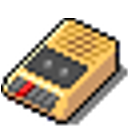
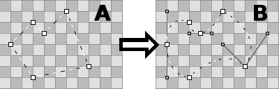
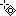
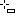
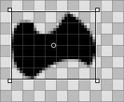
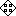

Svenska
Svenska Català
Català Deutsch
Deutsch English
English Español
Español Français
Français Italiano
Italiano Magyar
Magyar Polski
Polski Português
Português Português (Brazil)
Português (Brazil) Română
Română Slovenčina
Slovenčina Suomi
Suomi 中文 ［中文］
中文 ［中文］ Русский
Русский Українська
Українська 日本語
日本語| Innehåll |
| BeOS bitmap vs. Haiku vector icons Icons are attributes Creating icons with Icon-O-Matic Path Shape Style Transformer Saving an icon Tips & Tricks |
Icon-O-Matic
| Deskbar: | ||
| Location: | /boot/system/apps/Icon-O-Matic | |
| Settings: | ~/config/settings/Icon-O-Matic |
Before we come to the actual creating of icons in Icon-O-Matic, a few words on Haiku's icons in general.
 BeOS bitmap vs. Haiku vector icons
BeOS bitmap vs. Haiku vector icons
Contrary to the BeOS, Haiku uses vector icons instead of bitmap icons. A special Haiku Vector Icon Format (HVIF) was developed that is highly optimized for small file sizes and fast rendering. That's why our icons are for the most part much smaller than either a bitmap or the widely used SVG format. Also, unlike BeOS' bitmap icons, Haiku isn't limited to an 8bit palette (256 colors).
Take this icon of the Terminal, for example:
| Bitmap | SVG | HVIF |
| 1,024 byte + 256 byte | 7,192 byte | 768 byte |
Note that the BeOS used two versions of an icon, one 16x16 and one 32x32, to achieve good visuals in List and Icon View mode.
This trick isn't needed with vector icons. Besides only taking up a few hundred bytes in a file, vector icons also scale much better than bitmaps. (Note: BeOS offered only a 16x16 and 32x32 display.)
| 16x16 | 32x32 | 64x64 | 128x128 | |
| Bitmap |  | |||
| Vector |
Icons are attributes
Icons are stored as an attribute with their file. However, that doesn't mean that every file has to have this attribute to appear with an icon in a Tracker window: data files inherit their icon from their filetype. To globally change the filetype's icon you use the FileTypes preferences. If you only want to add a special icon to an individual file, you use the FileType add-on on it instead. See topic Filetypes for more information.
Creating icons with Icon-O-Matic
Icon-O-Matic is Haiku's icon editor that can save your work as HVIF, SVG or PNG. The icon can also be directly attached as attribute to an existing file or exported as a resource or source file used by developers. Since the application was tailored to the optimized HVIF format, its usage reflects the inner workings of this format.
Other than your normal vector graphics software, you don't deal with separate objects that each include all their specific properties like path, stroke width, stroke and fill color etc. Rather, you assemble your objects ("shapes") from shared paths and colors ("styles") and set certain properties. This re-using of elements is one secret of HVIF's efficiency. Although that imposes some constraints on the icon designer, there are a few advantages, too.
For example, by re-using a path, several objects can be modified together by manipulating this one path. Think of an object and its shadow. Modifying their shared path will change the object itself and automatically its (maybe slightly distorted/translated) shadow.
Here's a quick overview of Icon-O-Matic's window:

To create any visible object on the canvas, you need a shape with a path and a style. Conveniently, you can create one, two or all three of those together from the menu. Every kind of object (Paths, Shapes, Transformers, and Styles) has a menu above its list of elements, offering various commands. Every element has certain options that are set in the view.
Path
A path consists of several points which are connected with lines or Bezier curves. To add or change points, make sure the path is selected in the path list.
Simply clicking in the canvas will set the first point. While setting a point, you decide if the resulting line will be straight or curved: a simple click and release produces a straight line, holding down the mouse button and moving the mouse will drag out the handles for a Bezier curve. Of course, you can also change it all later on.
To get from "A" to "B", you have to transform some points from corner-points to curve-points. That's done by holding ALT while clicking on a point and dragging out the handles. This results in a symmetrical Bezier: the second handle follows the movement of the other. If you need to move the handles independently, again click & drag on a Bezier handle while holding ALT.
Vice versa, to go from Bezier to a corner-point, hold ALT and click on a point.
To move a point, simply click & drag it. To select more than one point, hold down SHIFT and draw a selection rectangle. Selected points are marked with a red border instead of the usual black.
To insert a point into a path you click on the connecting line between two points.
Selected points are deleted by pressing DEL or by clicking on any point while holding CTRL.
The mouse pointer indicates the current mode:
|  |  | ||||
| Move point(s) | Insert point | Add point | Delete point CTRL |
Corner↔Bezier ALT |
Select points SHIFT |
You can invoke a context menu by right-clicking a point or a selection of points:
| ALT A | Selects all points of the current path. | |
| T | Puts all selected points in a transformation box, so you can move, resize and rotate them together. It works just like with shapes, described a bit further down. | |
| Splits selected points into two, one sitting on top of the other. | ||
| Rotates selected points by 180°. Only has an effect on Bezier points. | ||
| DEL | Deletes selected points. |
Path Menu
The menu offers a few obvious entries to and or to or a path. Here are some that may need a bit more explaining:
| If your path isn't "closed" (see Path Properties below), a click into the canvas always creates a new point, connecting it with the last one. "Reverse" will reverse this order and your new point will connect to original start point instead. | ||
| Most useful with imported SVGs, this function will remove redundant points. | ||
| ALT R | Practically, this rotates the opening of a path. It's best seen when using a not-closed path with a style and a shape with a stroke transformer. Now, if your path looks like a ⊂ it will rotate like this: ⊂ ∩ ⊃ ∪. | |
| ALT SHIFT R | Does the same in the other direction. |
Path Properties
at the bottom left of the window offers all available settings of the currently selected object. A path only has two: a and if it's or not.
Shape
A shape groups together one or more paths with a style. Practically, it's the object that you'll actually see on the canvas. The grouping is done with the checkboxes in front of the paths and styles: Just select your shape and tick off the desired path(s) and a style.
A shape defines how a path and style is applied, e.g. if the object is filled or only stroked (which is done by using Transformers on the shape, we'll get to that later). Also, a shape can be moved, rotated or resized without touching the used path. That way, you can re-use a single path and get different, but related, shapes.
When a shape is selected from the list, a rectangle is drawn around it. Depending on where exactly you grab it, the shape is moved, resized or rotated around a point in its center, which itself can be moved. Holding SHIFT will lock direction when moving, limit rotating to 45° angles and restrict the aspect ratio while resizing. The mouse pointer again indicates the current mode:
|  | |||
| Move | Resize | Rotate | Move rotation point |
Shapes lie on top of each other, each is on its own layer, if you will. To reorder them you drag & drop their entry to a different position in the list.
Shape Menu
The menu offers the before mentioned possibility to and to or a shape. Then, there is:
| Reverts all the move, resize and rotate transformations you have applied to the shape. | ||
| When you transform a shape, its assigned path(s) stay in their original position. This may be intended; maybe more than one shape is using that path, maybe you intentionally used to set the points at precise pixel borders. If not, "Freeze transformation" will apply the current shape transformation to the assigned path(s). A future "Reset Transformation" will then return to this new state. |
Shape Properties
Besides a , the view for a shape has these options:
| Minimum Level of Detail | ||
| Maximum Level of Detail |
Level of Detail (LOD)
| 16x16 | 32x32 | 64x64 |
See how there are no numbers in the 16px version of the BeVexed icon? That's done with the "Level of Detail" setting of their shapes.
With the LOD you control the visibility of a shape depending on its size. That way, you can leave away details of an icon that look good on a bigger icon, but maybe not so much on its smaller version.
This is how it works: A LOD of 1.0 is defined as a 64px icon size. To get the LOD of a particular icon size you simply divide it by 64, e.g. a 16px icon has a LOD of 16/64 = 0.25. A shape won't be visible below its and above its .
So, if you set a shape's to 0.0 and the to 0.5, this means that the shape will only be visible for icon sizes smaller or equal to 32px. If you wanted to exclude the 32px icon size, you'd have to stay below 0.5, say 0.49.
The LOD is not only for leaving out detailing shapes, but also to e.g. change the stroke width at different sizes, if you feel that's needed. Simply duplicate a shape, make your changes and set both of their LOD settings to show either one or the other. Here lies the only source of potential confusion, when you unwittingly overlap LODs of shapes, and wonder why at some size both are visible...
For example, if Shape 1 were to be shown below 48px and Shape 2 from 48px upward (LOD: 48/64 = 0.75):
| OK | Not OK! | ||||
| Shape 1 | Min LOD | 0.00 | Min LOD | 0.00 | |
| Max LOD | 0.74 | Max LOD | 0.75 | ||
| Shape 2 | Min LOD | 0.75 | Min LOD | 0.75 | |
| Max LOD | 4.00 | Max LOD | 4.00 | ||
Style
A style can either be a solid color or some type of gradient.
Besides the predefined colors under , you can mix your own by clicking on the current color. Also, note the slider under the color spectrum which sets the alpha-channel (transparency).

You quickly create a new style by mixing your color and simply drag & dropping it into the list of styles.
If you go for a gradient, you set the type (, , , ) and then define the start and end colors. This is done with a drag & drop from a color bucket into the respective color indicator under the gradient.
Of course you can move these indicators to change the gradient to your liking. You can also insert more indicators to add more colors by double-clicking into the gradient. Pressing DEL removes the selected indicator.
You can move, resize and rotate the representing box of a gradient on the canvas until it fits your needs. This works just like with shapes.
Style Menu
The menu offers the usual entries to , or a style and to .
Style Properties
The is the only of a style.
Transformer
A shape can have Transformers which change its appearance. The effects, however, are more subtle than a truck turning into a battle robot...
Transformer Add Menu
| Adds an outline to a shape. | ||
| Strokes the path of a shape instead of filling it with a style. |
Depending on the kind of Transformer, you'll get a different set of properties.
Transformer Properties
Besides a and the actual for the transformer, the view has these (depending on its type slightly differing) options:
| Stroke only. Defines the end caps of a line: , or . | ||
| Contour only. Determines if the contour is to the inside or outside the path. | ||
| Defines how lines are joined at a point: , or . | ||
| Only when the above is set to "Miter" this setting influences the looks of the miter joint. |
Saving an icon
There's your usual menu bar at the top, , , . The usage is pretty much self-explaining, so we'll only look at how to save your work.
will save in a special Icon-O-Matic format that retains additional information like the names of paths, shapes and styles. These will be stripped from the actual icon once you export it to save space. It's a good idea to back-up your work like this, because without named objects everything's named "<path>/<shape>/<style>" which makes specific changes tedious.
opens a familiar save panel with a file format pop-up menu at the bottom, offering these choices:
| HVIF | Haiku Vector Icon Format | |
| HVIF RDef | Saves as resource used by programmers | |
| HVIF source code | Saves as source code used by programmers | |
| SVG | Saves as SVG | |
| PNG | Saves as a 64px sized PNG | |
| PNG set | Saves as 16, 32 and 64px sized PNGs | |
| BEOS:ICON attribute | Choose a file and set its icon attribute directly | |
| META:ICON attribute | Choose a file and attach the icon as mere meta data |
Tips & Tricks
A few things you should keep in mind when working with Icon-O-Matic and some general tips for its usage:
Read the Icon Guidelines to learn about important characteristics of Haiku icons, e.g. perspective, shadows and the Haiku color palette.
You should always try to minimize your use of paths, those are the most expensive, file size wise. Re-use paths wherever possible and work with manipulated shapes and their transformers instead. Smart use of gradients can also save space.
Wherever possible, you should activate Snap-to-Grid from the menu when editing paths. Path points that align with the 64x64 pixel grid use less storage space. You'll also get the crispest look if points are set on exact pixel borders. For example, it is important to align the most prominent outlines with the 16x16 grid.
Check the preview to see if your icon still looks good in 16x16. You may want to use the Level Of Detail settings described in the Shapes section.
There's an easy way to produce letters, even if Icon-O-Matic doesn't provide such a tool. Just enter the text in a text editor such as StyledEdit, adjust font type and style, and drag & drop or copy & paste the selected text into Icon-O-Matic. This will create the according paths and shapes.
If you assign more than one path to a shape, their overlapping areas will cancel each other out. When one path is completely inside another, it practically creates a hole in the resulting shape.
You can zoom in and out of the canvas with the mouse wheel. Panning is done either by click & drag with the middle mouse button or with a normal left-click & drag while holding SPACE.
{kind=link}